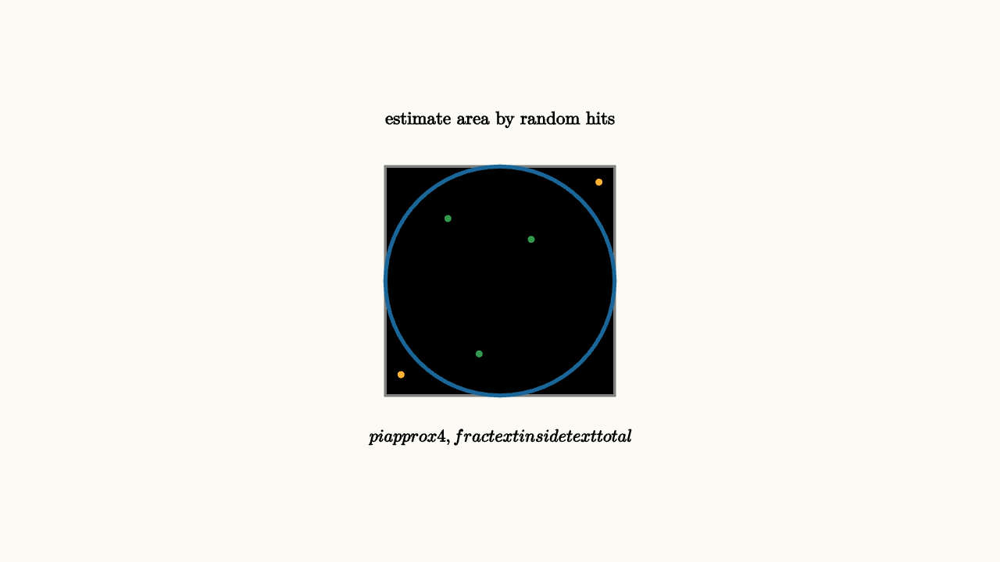

Monte Carlo Turns Randomness Into Estimates
Monte Carlo methods solve problems by sampling. When an exact calculation is difficult, we can simulate many random trials and average the result. The estimate improves as the number of samples grows.
The method feels almost too simple the first time you see it. Instead of solving every case symbolically, we create many possible worlds and measure them. A project manager can sample task durations to estimate a completion date. An engineer can sample component lifetimes to estimate failure risk. A student can sample random points to estimate an area that would be hard to integrate by hand.
The basic law is the law of large numbers. If $X_1,\ldots,X_n$ are independent samples with mean $\mu$, then
gets closer to $\mu$ as $n$ grows.

source
background = [0.985, 0.98, 0.955, 1]
camera = Camera(4.8b)
mesh dots = block {
. stroke{GRAY, 2} center{[0, 0, 0]} Rect([2.2, 2.2])
. stroke{BLUE, 3} center{[0, 0, 0]} Circle(1.1)
. fill{GREEN} center{[-0.5, 0.6, 0]} Circle(0.04)
. fill{GREEN} center{[0.3, 0.4, 0]} Circle(0.04)
. fill{GREEN} center{[-0.2, -0.7, 0]} Circle(0.04)
. fill{ORANGE} center{[0.95, 0.95, 0]} Circle(0.04)
. fill{ORANGE} center{[-0.95, -0.9, 0]} Circle(0.04)
. center{[0, 1.55, 0]} Text("estimate area by random hits", 0.62)
. center{[0, -1.5, 0]} Tex("\\pi \\approx 4\\,\\frac{\\text{inside}}{\\text{total}}", 0.60)
}
"random samples"
play Fade(0.6)The classic demo estimates $\pi$. Throw random points into a square containing a circle. The fraction landing inside the circle estimates the ratio of areas. Multiply by four.
Monte Carlo is useful far beyond geometry. It estimates investment risk, project completion times, queue delays, election uncertainty, reliability, integrals, and game strategies.
The same recipe keeps appearing:
1. Choose a random experiment that matches the question. 2. Run it many times. 3. Record the quantity you care about. 4. Average the results and report the uncertainty.
For a project schedule, one trial might pick a duration for each task, respecting dependencies, then record the finish date. After thousands of trials, the manager can say more than "the project takes 30 days on average." They can estimate the chance of finishing before a deadline and find which tasks create the longest tail.
source
param n = 0.25
background = [0.985, 0.98, 0.955, 1]
camera = Camera(4.8b)
let Estimate = |n| block {
. stroke{GRAY, 2} Line(start: [-2.5, 0, 0], end: [2.5, 0, 0])
. stroke{BLUE, 4} ExplicitFunc(|x| 0.55 * sin(3 * x) * (1 - n) + 0.2 * sin(8 * x) * (1 - n), [-2.4, 2.4, 160])
. stroke{ORANGE, 3} Line(start: [-2.4, 0.02, 0], end: [2.4, 0.02, 0])
. center{[0, 1.35, 0]} Text("more samples make noise shrink", 0.62)
. center{[0, -1.25, 0]} Tex("\\text{error scale} \\sim 1/\\sqrt n", 0.62)
}
"few samples"
mesh estimate = Estimate(n: $n)
play Fade(0.5)
"many samples"
n = 0.88
estimate = Estimate(n: $n)
play Lerp(1.0)The slow part is convergence. To cut random error by a factor of ten, we usually need about one hundred times as many samples. That square-root rule explains why clever sampling strategies matter.
That square-root rule is the standard error idea. If the sample standard deviation is $s$, then the average of $n$ independent trials typically has uncertainty on the scale of
More samples help, but they help slowly. This is why simulation work also cares about variance reduction, better random inputs, and checking whether the simulation model itself matches reality.
The final warning is that simulation does not rescue a bad model. If the input probabilities are made up carelessly, the output will be precise-looking fiction. Monte Carlo is strongest when the randomness is a faithful description of the situation and when the reported estimate includes uncertainty.
The lesson to keep: Monte Carlo trades exact formulas for repeated random experiments. It is easy to start, widely useful, and limited by the square-root pace of sampling error.